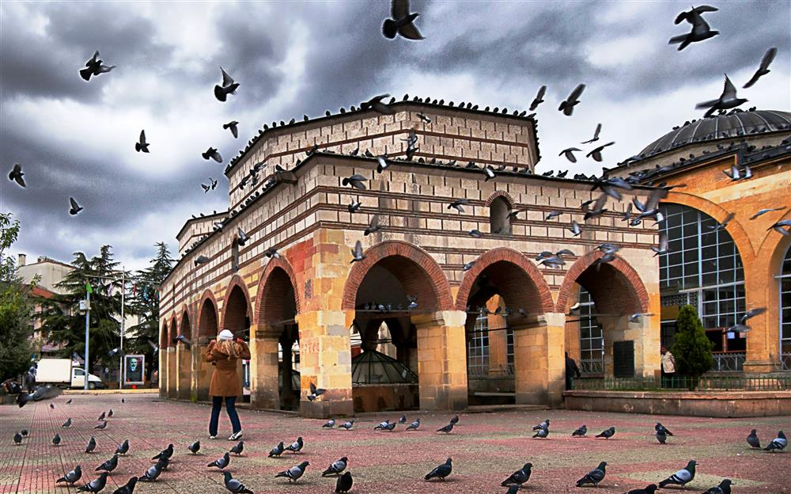
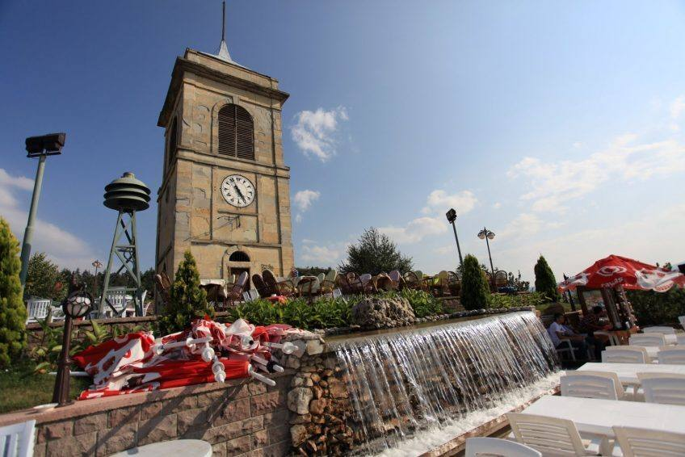
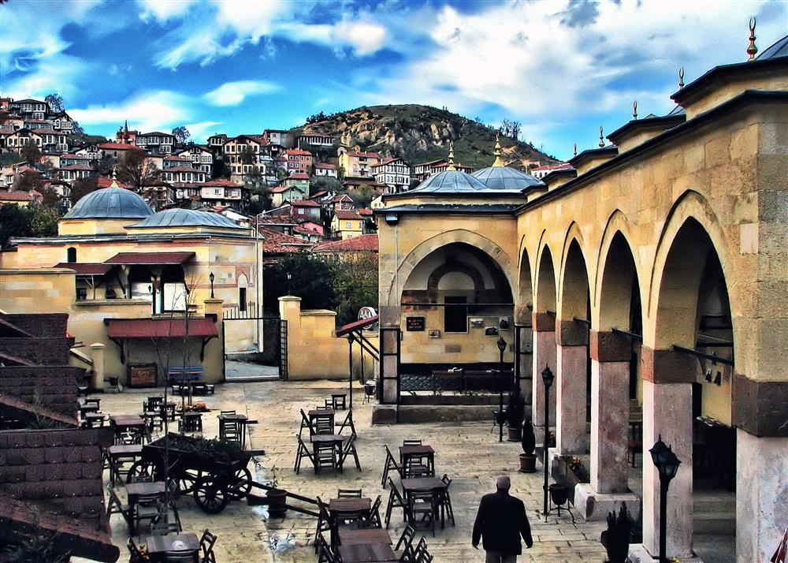
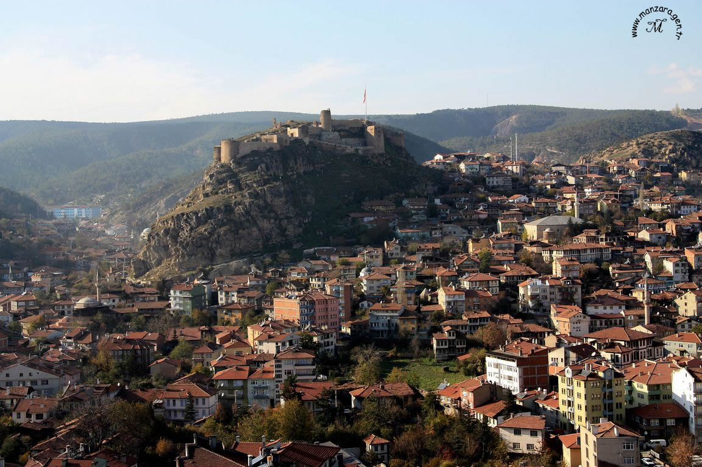

Resimler Hakkında
Nasrullah Cami
Nasrullah Camii, Kastamonu'da Kadı Nasrullah tarafından 1506 yılında inşa edilmiş dini yapıdır.
Saat Kulesi
Kastamonu Saat Kulesi, Kastamonu ilinin Kastamonu ilçesinde bulunan saat kulesi. Yaklaşık 12 metre yüksekliğinde olan ve kesme taştan imal edilen[1] saat kulesinin Doğu Arap rakamlarının yer aldığı 1,60 metre çapındaki saat kadranının II. Abdülhamid tarafından gönderildiği rivayet edilmektedir.[2] Kule son olarak 2002 yılında restore edilmiştir.[3]
Yakup Ağa Külliyesi
1547’de Kanuni Sultan Süleyman’ın hazine reisi Yakup Ağa tarafından yaptırılmıştır, medrese, imaret, misafirhane ve sıbyan mektebinden oluşur. Cami; Yavuz Sultan Selim’in hocası Halimi Çelebi tarafından yaptırılmıştır. 1547’de Yakup Ağa tarafından onarılmış bugünkü halini almıştır. Kesme taştan yapılmıştır, kubbeler kurşunla örtülüdür. Yapılış tekniği dolayısıyla mimari kıymeti bulunduğu gibi medrese, imaret ve sıbyan mektebine sahip bir külliyede yer aldığı için de ayrıca değerlidir. Minaresi Cami’nin güneybatı köşesine inşa edilmiştir.
Hazreti Pir Camii
Seyyid Sünneti Efendi tarafından 1490 Miladi yılından önce yaptırılmıştır. Caminin ilk şekli bilinmemektedir. 988-1580 yılında Sultan 3. Murad’ın hocası ve mürşidi Şuca Efendi, Seyyit Sünneti Efendi mescidini genişleterek bugünkü haliyle camiyi yaptırmıştır. Cami, 1702, 1748 ve 1950 yıllarında tamir görmüştür. İbadete açıktır.

Kastamonu Kalesi
Kale, Kastamonu’nun ana simgelerinden biri olarak kentin en yüksek noktasından şehrin tacı gibi durmaktadır. Şehrin batısında bir ana kaya kütlesi üzerinde bulunan kale, MS.12'nci yüzyılda Komnenoslar tarafından yaptırılmıştır. Orijinal yapıdan günümüzde sadece iç kale kısmı ulaşmıştır. Kalenin dış surları 18'inci yüzyıl sonlarında yok olmuştur. Kalenin çeşitli dönemler içerisinde geçirmiş olduğu değişiklikler, bir Orta Çağ Bizans yapısından çok Türk mimarisini yansıtmasına neden olmuştur. Kalenin şehirden yaklaşık 120 metre yüksekte oluşu; ulaşım yönünden oldukça kolay olması Kastamonu’yu panaromik açıdan izlenebilecek en iyi yer konumunda bulunmasını sağlar. Kale içerisinde sarnıçlar, zindan, kaçış tünelleri ile “Bayraklı Sultan” olarak anılan türbe bulunmaktadır.
